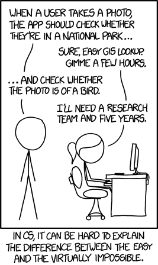

!pip install -qq -U fastai ipywidgets ipynbname pillow pillow-avif-plugin inflect
!pip install -qq -U selenium webdriver_manager retry
!pip install -qq -U duckduckgo_search
!pip install -qq -U clip-retrieval
!pip install -qq protobuf==3.20.0Introduction
The idea of developing a computer system capable of recognizing birds was considered extremely difficult in 2015, so much so that it was the inspiration for an XKCD joke.
I want to make a bird detector that works fairly reliably with any sort of input image.
A multi-label classifier for birds, cats, and dogs should be a good starting point.

It’s going to take me a lot more than 5 minutes to make a good bird detector, but hopefully I won’t need to hire a research team for five years!
These are my main references:
- Practical Deep Learning for Coders, 2022 edition, lesson 0: Is it a bird?
- The FastAI book, chapter 6
- Walk with FastAI Revisited:
After doing maybe half of the work for this project, I found that it will be too much for a single blog post, so I’m splitting it up into eight posts:
- collecting images
- reusable functions
- Google image search
- cleaning up the dataset
- finding duplicate images
- training the model
- deploying with fastai
- deploying without fastai
Search engines
I tried a few different search engines to find suitable images:
- DuckDuckGo image search, which is based on Bing image search, has a nice Python API, and was used for the 2022 FastAI course.
- LAION Clip retrieval; LAION is the image set that was used for training Stable Diffusion.
- Google image search, using my own scraping tool written in Python.
Install requirements
!jupyter nbextension enable --py --sys-prefix widgetsnbextensionEnabling notebook extension jupyter-js-widgets/extension...
- Validating: OKImport required libs
%load_ext autoreload
%autoreload 2import pillow_avif
from fastai.vision.all import *I collected some reusable functions in a mini library ucm.py; see part 2: reusable functions.
from ucm import *General setup
data = Path("bird_cat_dog")null_query = "photo of outdoors"
labels = ["bird", "cat", "dog"]
query_prefix = "photo of "samples_per_query = 200Find images using duckduckgo_search
from duckduckgo_search import ddg_imagesengine = "ddg"confirm_delete(data/engine)for comb in powerset(labels):
others = seq_diff(labels, comb)
dirname = "_".join(comb) + "_"
path = data/engine/dirname
query = query_prefix + join_a_foo_and_a_bar(comb) if comb else null_query
query += " " + " ".join("-"+x for x in others)
try:
path.mkdir(parents=True, exist_ok=False)
except FileExistsError as e:
print(f"already downloaded: {query}")
continue
print(f"downloading: {query}")
# want creative commons images to avoid stock photos, but not many CC images have all three
license = "any" if len(comb) < 3 else None
results = ddg_images(query, max_results=samples_per_query, license_image=license)
urls = [r["image"] for r in results]
download_images(dest=path, urls=urls)already downloaded: photo of outdoors -bird -cat -dog
already downloaded: photo of a bird -cat -dog
already downloaded: photo of a cat -bird -dog
already downloaded: photo of a dog -bird -cat
already downloaded: photo of a bird and a cat -dog
already downloaded: photo of a bird and a dog -cat
already downloaded: photo of a cat and a dog -bird
already downloaded: photo of a bird and a cat and a dog Find images using LAION
Deduplication means that fewer than samples_per_query images will be returned, around 75% or so.
from clip_retrieval.clip_client import ClipClientengine = "laion"confirm_delete(data/engine)laion = ClipClient(
url="https://knn.laion.ai/knn-service",
indice_name="laion5B-H-14",
aesthetic_score=0, aesthetic_weight=0,
num_images=samples_per_query)for comb in powerset(labels):
dirname = "_".join(comb) + "_"
path = data/engine/dirname
query = query_prefix + ", ".join(comb) if comb else null_query
try:
path.mkdir(parents=True, exist_ok=False)
except FileExistsError as e:
print(f"already downloaded: {query}")
continue
print(f"downloading: {query}")
results = laion.query(text=query)
urls = [r["url"] for r in results]
download_images(dest=path, urls=urls)downloading: photo of outdoors
downloading: photo of bird
downloading: photo of cat
downloading: photo of dog
downloading: photo of bird, cat
downloading: photo of bird, dog
downloading: photo of cat, dog
downloading: photo of bird, cat, dogreferences for LAION clip retrieval
- https://replicate.com/blog/grab-hundreds-of-images-with-clip-and-laion
- https://github.com/rom1504/clip-retrieval
- https://rom1504.github.io/clip-retrieval/
Find images using Google search
I wrote a small tool and library to find images using Google image search; see part 3: Google image search.
from google_images import install_webdriver, start_chrome, google_image_searchengine = "gimg"confirm_delete(data/engine)with start_chrome() as wd:
for comb in powerset(labels):
others = seq_diff(labels, comb)
dirname = "_".join(comb) + "_"
path = data/engine/dirname
query = query_prefix + join_a_foo_and_a_bar(comb) if comb else null_query
query += " " + " ".join("-"+x for x in [*others, "stock"])
try:
path.mkdir(parents=True, exist_ok=False)
except FileExistsError as e:
print(f"already downloaded: {query}")
continue
print(f"downloading: {query}")
# want creative commons images to avoid stock photos, but not many CC images have all three
opts = "tbs=il:cl" if len(comb) < 3 else ''
urls = google_image_search(query, safe=True, n=samples_per_query, opts=opts, wd=wd)
download_images(dest=path, urls=urls)INFO:WDM:====== WebDriver manager ======
INFO:WDM:Get LATEST chromedriver version for google-chrome 111.0.5563
INFO:WDM:Driver [/home/sam/.wdm/drivers/chromedriver/linux64/111.0.5563/chromedriver] found in cachedownloading: photo of outdoors -bird -cat -dog -stock
downloading: photo of a bird -cat -dog -stock
downloading: photo of a cat -bird -dog -stock
downloading: photo of a dog -bird -cat -stock
downloading: photo of a bird and a cat -dog -stock
downloading: photo of a bird and a dog -cat -stock
downloading: photo of a cat and a dog -bird -stock
downloading: photo of a bird and a cat and a dog -stockThis project continues in part 2: reusable functions
scratch
!mvdata bird_cat_dogmkdir: created directory '/home/sam/ai/data/blog'
mkdir: created directory '/home/sam/ai/data/blog/posts'
mkdir: created directory '/home/sam/ai/data/blog/posts/multilabel'
mv renamed 'bird_cat_dog' -> '/home/sam/ai/data/blog/posts/multilabel/bird_cat_dog'
ln 'bird_cat_dog' -> '/home/sam/ai/data/blog/posts/multilabel/bird_cat_dog'data.readlink()Path('/home/sam/ai/data/blog/posts/multilabel/bird_cat_dog')!mv ~/ai/data/blog/posts/multilabel/{bird_cat_dog,bird_cat_dog.orig}